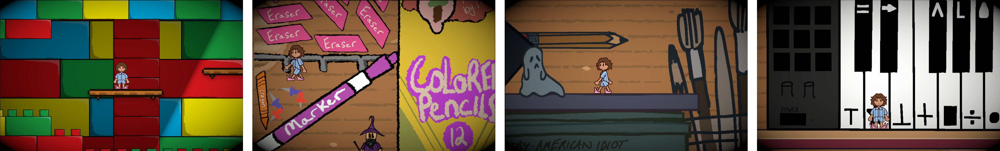
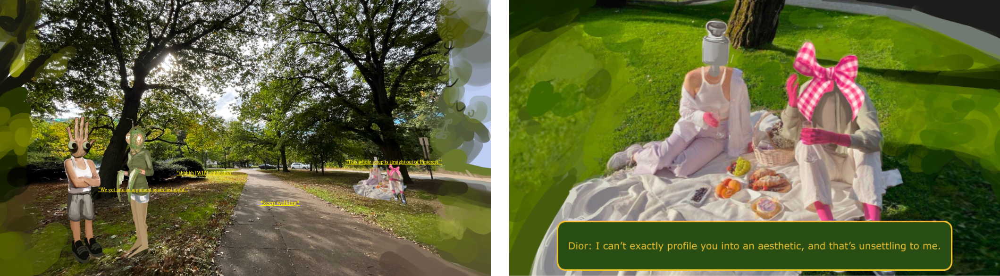
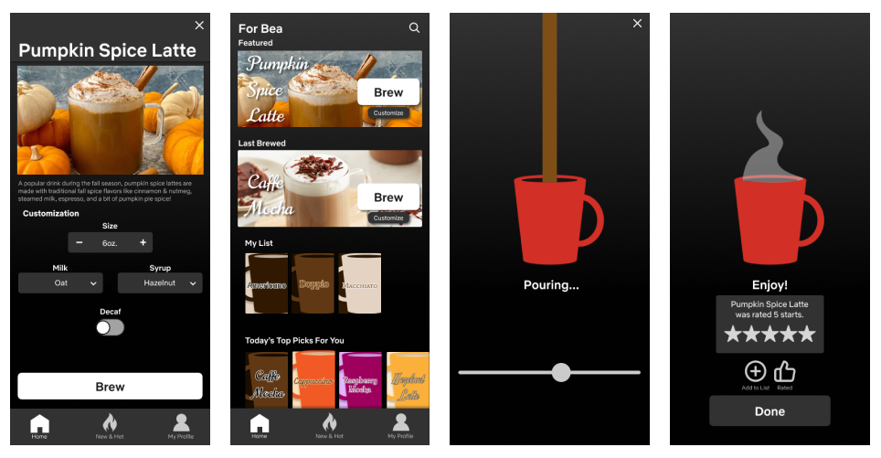
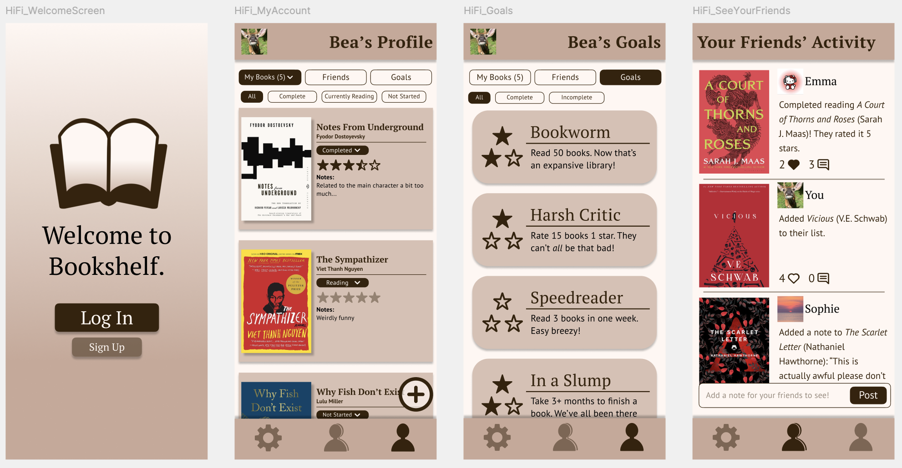
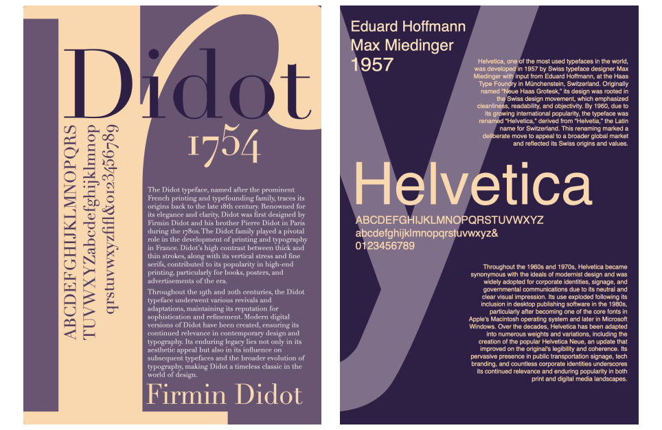

Bea Luna

My passion lies in creating meaningful experiences that inspire reflection and foster connection.
From a young age, I've been passionate about creating art inspired by the many facets of my life. Now, as a Computer Science and Design student at Northeastern University, I'm exploring the powerful intersection between art and technology and the ways they can elevate one another. With a minor in Writing, my interest in storytelling drives me to craft digital experiences that spark reflection and inspire thoughtful conversations. As I deepen my skills in Java and other programming languages, my goal is to create interactive experiences that captivate users and encourage them to see themselves—and the world—through a new lens.
The Latest
Currently Working On: NEIGHbor
I'm diving deep into an exciting interaction design project centered around Farmers Horse Coffee, a beloved local cafe near Northeastern's campus! Through extensive user research—including interviews with regulars and firsthand observations—I'm exploring how we might enhance the cafe experience and foster meaningful connections within intimate community spaces.
How do we preserve the delicate balance between work-focused and social atmospheres in cafes? How can we encourage authentic interactions in an age where approaching strangers feels increasingly awkward? What makes a space feel "lived-in" and inviting?
Take a look at my progress here and stay tuned for more updates as this project evolves!
Languages
- Java
- HTML / CSS
- C#
- JavaScript
Platforms & Tools
- IntelliJ
- Rider
- Processing
- Unity
- Eclipse
- VSCode
Systems
- macOS
PROJECTS
Note: some of my GitHub repositories are private to preserve the integrity of my code. If you would like to see my code, please email me and I'll grant you access to it! Thx!
Childhood Dream

I coordinated with a group of four peers to design and construct a nostalgic 2d platform game exploring themes of growing up and revisiting your childhood memories. Compatible only on desktop screens.
Touching Grass

To further my HTML skills, I programmed a website hosting a game I designed for Generation Z and Alpha, exploring and critiquing growing up with the Internet, its volatility, and its tendency to radicalize & sensationalize everything. I am currently developing a zine expanding on this concept and characters.
Flame Escape
Exercising my prototyping with code skills, I created a simple game about a little sentient flame who is stuck in the middle of a rainstorm. The flame must avoid the falling raindrops to survive!
Technical Skills
- Adobe Illustrator
- Adobe Photoshop
- InDesign
- Figma
Design Skills
- User Research
- Wireframing
- Prototyping
- Usability Testing
PROJECTS
NEIGHbor: a Farmers Horse Coffee Case Study & App
An ongoing project about developing a mobile app concept designed to enhance the journey to and experience at Farmers Horse Coffee, using extensive user research and interviews to create realistic user personas, user scenarios, and workflows.
DigiU UX Personas
.png)
An ongoing project from my previous co-op on creating a comprehensive resource for all members of the university for user needs—transitioning files from one database to another, onboarding for students and staff, etc. I conducted user research and created 15+ personas of university students, faculty, and staff, and their flows when using our conceptual site.
BrewIt

Exploring the translation from an analog interaction (making coffee with a coffee machine) to a digital interface. How does one replicate the user's experience of something physical within a digital space? To tackle this question, I designed BrewIt, a mobile app based off Netflix's UI that lets the user browse and brew coffee.
Note Mode - A Canvas Intervention

We are constantly reading, and reading all different types of media. Note Mode is a feature I designed and prototyped for the platform Canvas, aiming to enhance the reading experience of college students.
BookNook

Make a game out of reading books with my concept app BookNook! Track the books have/will read, their respective ratings, and your thoughts on them through a goal-achievement-based system. Add your friends to see each other's reading achievements, and leave little comments about whatever they're reading!
Typeface Posters

A pair of informational posters on the typefaces Didot & Helvetica and their respective backgrounds.
[i also post my art on instagram!]